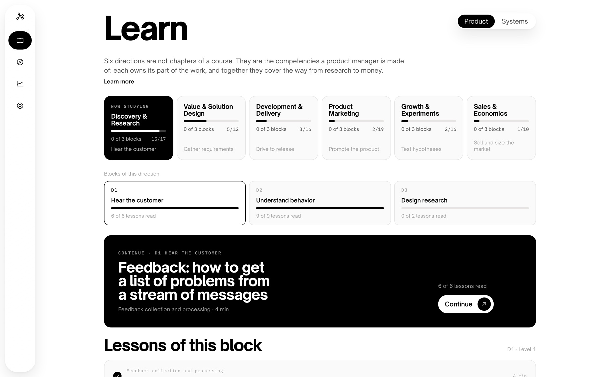
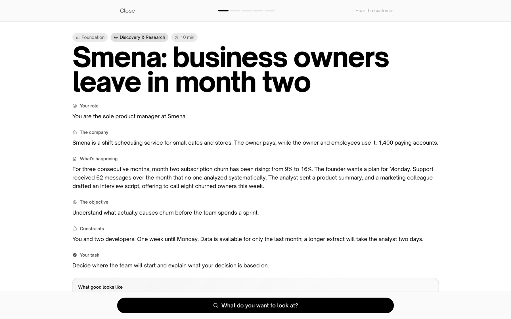
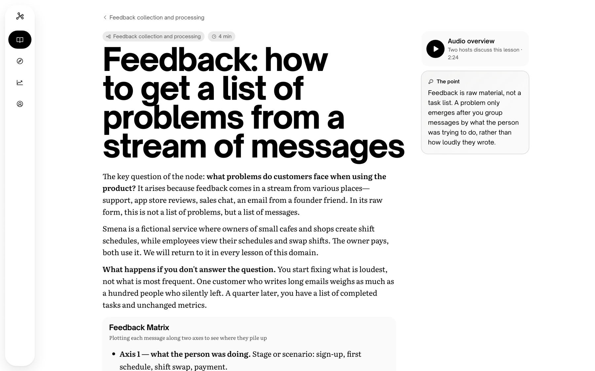
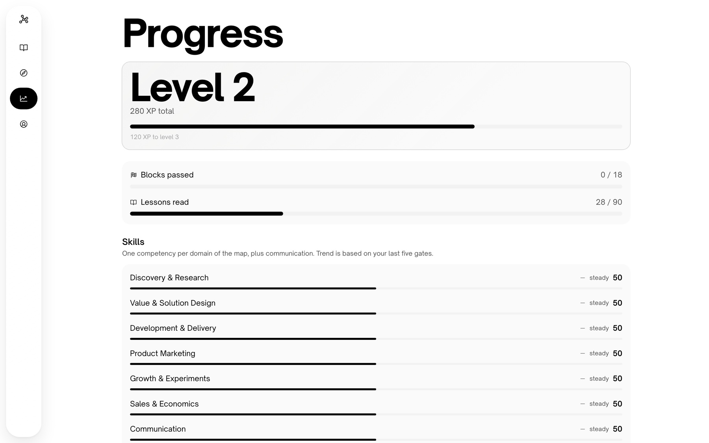

PM Thinking Coach
The map of the profession, turned into a route you can walk from zero

What it is
Most learning resources for new product managers are libraries: piles of articles you’re expected to organize yourself. That works if you already know what you’re missing—which is exactly what beginners don’t.
PM Thinking Coach turns the map of the profession into a learning path. Two skill trees - Product Management and System Design cover 167 skills in total. Each skill is a focused card you can open, explore, and learn from. But learning doesn’t stop at reading. Every skill block ends with a gate: a realistic business scenario with incomplete information. You make a decision, explain your reasoning, and defend it in writing - building the judgment and structured thinking that real product management requires.
PM Thinking Coach runs on iOS with SwiftUI and in the browser, powered by a shared FastAPI and PostgreSQL backend. One account, one skill map, one learning experience across platforms.

A gate, not a quiz
This is the decision the entire product is built around. A multiple-choice test measures whether you remember the right answer. The job of a product manager is different: to make a defensible decision with incomplete information. That’s why every gate gives you a company, a constraint, and a deadline. You decide what evidence to investigate, make the call, and then explain why you made it.
The scoring system reinforces this philosophy rather than simply encouraging it. The decision itself is worth 25 of 100 points, while rationale and communication account for 60. With a passing score of 70, choosing the “right” option isn’t enough—you have to demonstrate how you arrived at it. A content validator also rejects scenarios where a defensible alternative would score unfairly low, preventing single-answer questions from entering the corpus in the first place.
- Every gate has at least two scenarios, each featuring a different company, so you can’t pass a retake by memorizing the answer.
- Failure has no penalty. You lose no XP, nothing gets locked, and your result points directly to the lessons that could help you improve.
- The server owns progression. Score, XP, and unlock status are determined server-side; the client only renders them. A UI bug can never unlock a gate prematurely.

The lessons
A lesson is built around one idea, one practical model, and the point where that model stops working. Product management lessons take three to five minutes; system design lessons take twelve to fifteen. Within each domain, the same fictional company runs through every skill block, so examples build on each other instead of resetting with every lesson.
Lessons can also include an audio overview: a two-host conversation that explores the material in the style people have come to expect from tools like NotebookLM. It isn’t the lesson being read aloud - because written prose rarely makes good audio. The dialogue is generated once at build time and stored as a content file, where it can be reviewed, edited, and versioned like any other piece of content. The runtime never calls an AI model.
Generated content is validated rather than blindly trusted. An audio draft is rejected if it introduces a number or term that doesn’t appear in the lesson, turns into a one-person monologue, or simply quotes the source material verbatim. When a lesson changes, its audio overview is automatically marked as outdated rather than silently narrating an older version.

What is in it
The corpus is authored, not generated - and it’s complete. Both skill trees are fully published from day one.
- Two complete skill trees: Product Management (18 blocks, 71 skills) and System Design (18 blocks, 96 skills), with the full map available from the start.
- 248 lessons, 36 gates, and 87 gate scenarios.
- 96 System Design exercises, intentionally formative: they award no XP, don’t affect progression, and show the reference reasoning even when submitted empty.
- A 489-term glossary, with diagrams stored as structured data rather than images, allowing screen readers to access meaningful descriptions instead of inaccessible visuals.
- Eight competencies tracked per learner, covering the core domains of the skill map plus communication and system design

Where it stands
Both skill trees are complete, and a full end-to-end traversal has been verified through the API. The evaluator currently runs on a deterministic mock provider. It exercises the complete evaluation flow, but the coaching output is intentionally stubbed, and gate calibration against QA fixtures cannot be meaningfully validated until a real model provider is connected. That is the next, and deliberately final, implementation decision. Nothing else in the product is coupled to a specific model, so the provider can be swapped without changing the underlying product or assessment logic.
- Defined the beta success metrics before launch: activation, time to first value, D7 repeat practice, and whether the feedback was useful